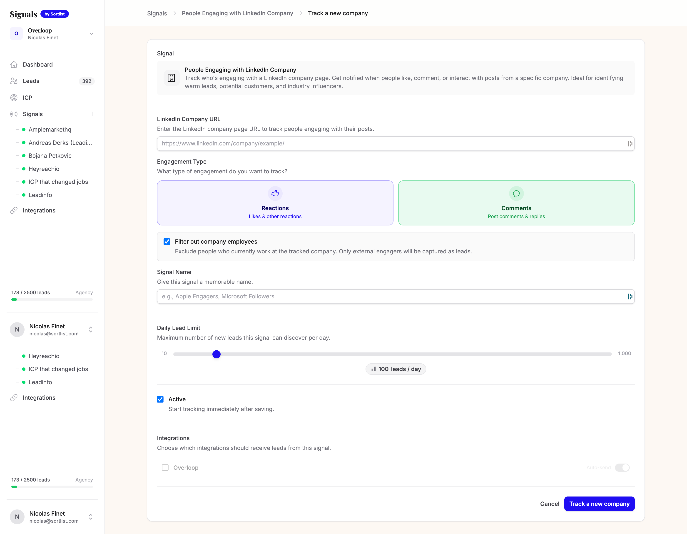
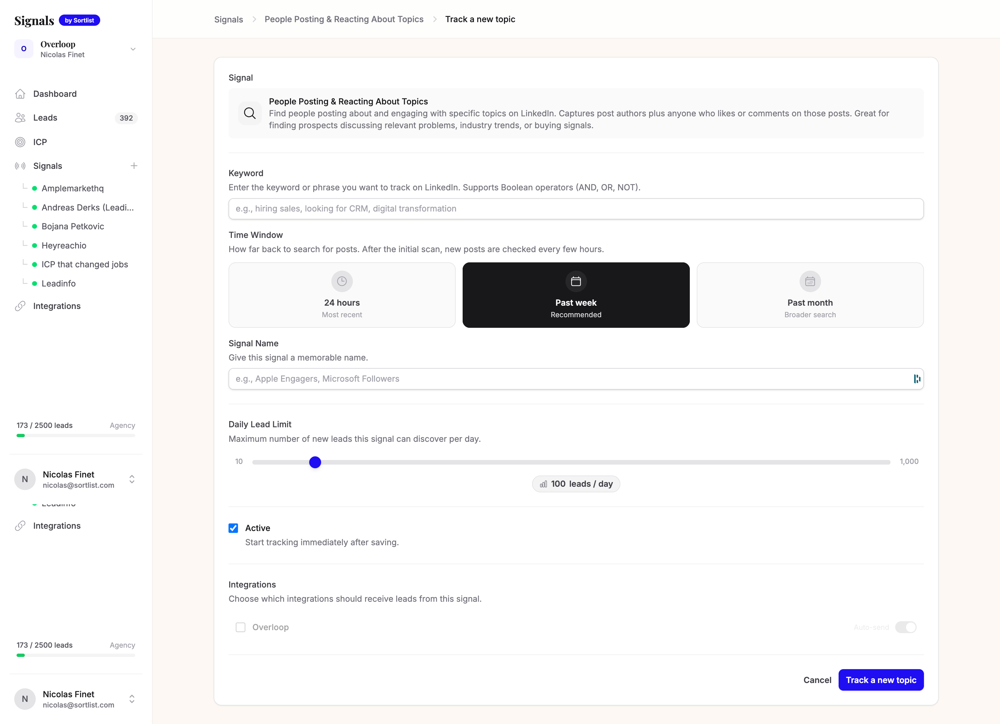

The 5 buying signals
Sortlist Signals monitors LinkedIn 24/7 for 5 types of buying signals. Not all are equal. Here's what each one detects and why it converts.

Job Changes
People who recently moved into decision-making roles (CMO, VP Sales, Head of Growth, CTO...). New executives reassess every vendor, tool, and agency relationship in their first 90 days. They have both the mandate and the budget to make changes.

Competitor Content Engagement
People who like, comment, or interact with your competitors' LinkedIn posts. If someone engages with a competitor's content, they care about the topic. They're in-market. They just don't know about you yet.

Topic Conversations
People posting or commenting about specific topics on LinkedIn. The highest volume signal. People literally announce their problems in public: "Looking for a new CRM." "Struggling with our outbound." Every day. Nobody reaches out.
Keyword craft is everything.

Funding Announcements
Companies that recently announced funding rounds, matched with decision-makers who fit your ICP. Fresh capital = active budget. Funded companies invest in marketing, hiring, tools, and scaling. They need partners and vendors.
Profile & Page Engagement
People who engage with YOUR LinkedIn content. These people already know you exist. They've shown interest by engaging. This is the warmest signal hiding in plain sight, and most companies do nothing with it.
Signal Strength Matrix
| Signal | Volume | Conversion | Best For |
|---|---|---|---|
| Job Changes | Low | Very High | High-ticket B2B, agency services |
| Competitor Engagement | Medium | High | Competitive markets |
| Topic Conversations | Very High | Variable | Broad awareness, pain detection |
| Funding | Low | High | SaaS, tools, services |
| Page Engagement | Medium | High | Content-led, personal brands |